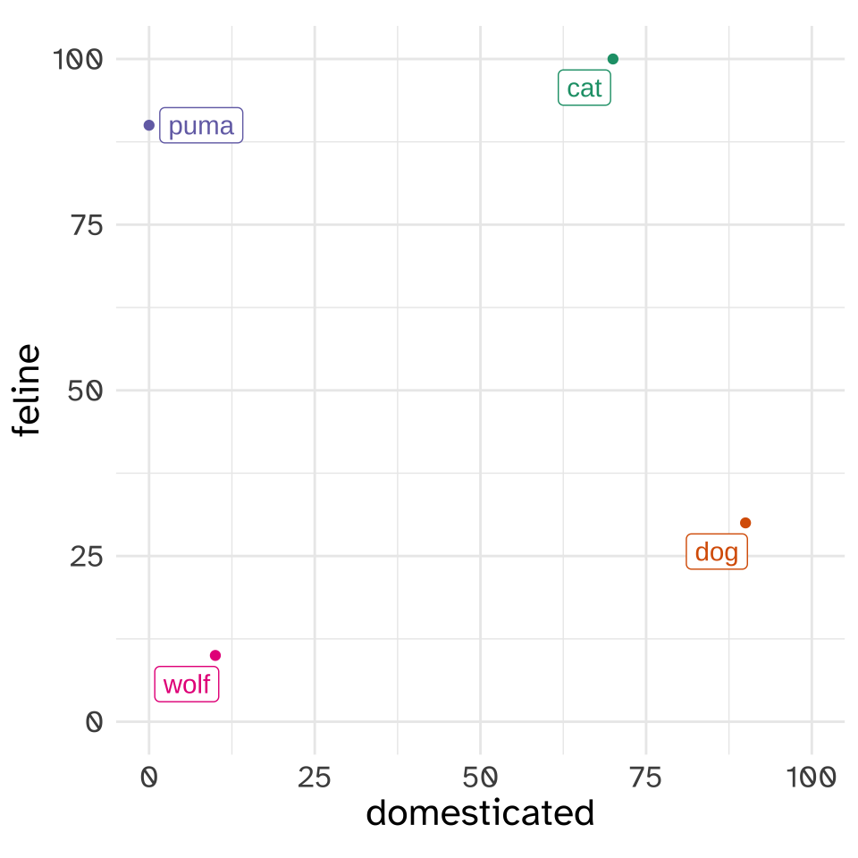
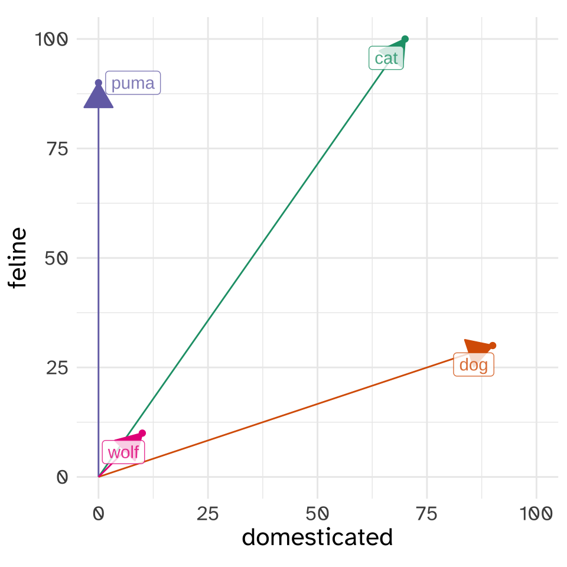
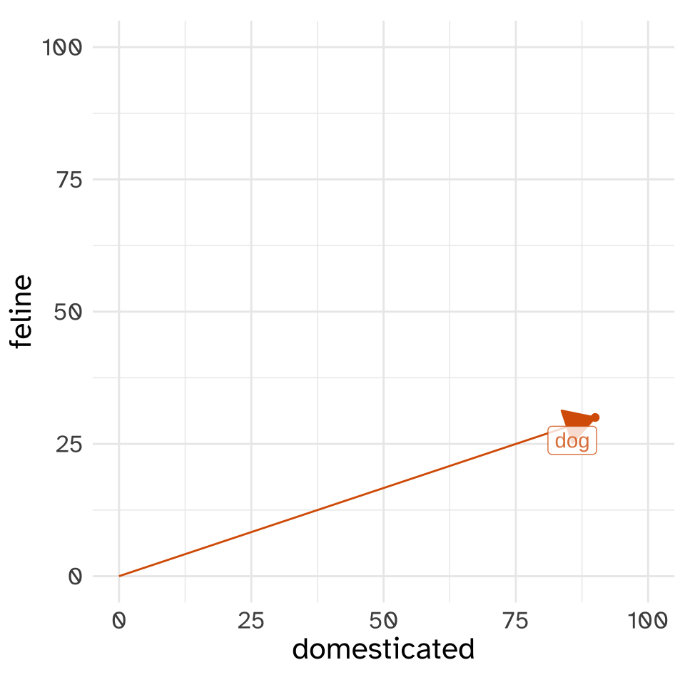
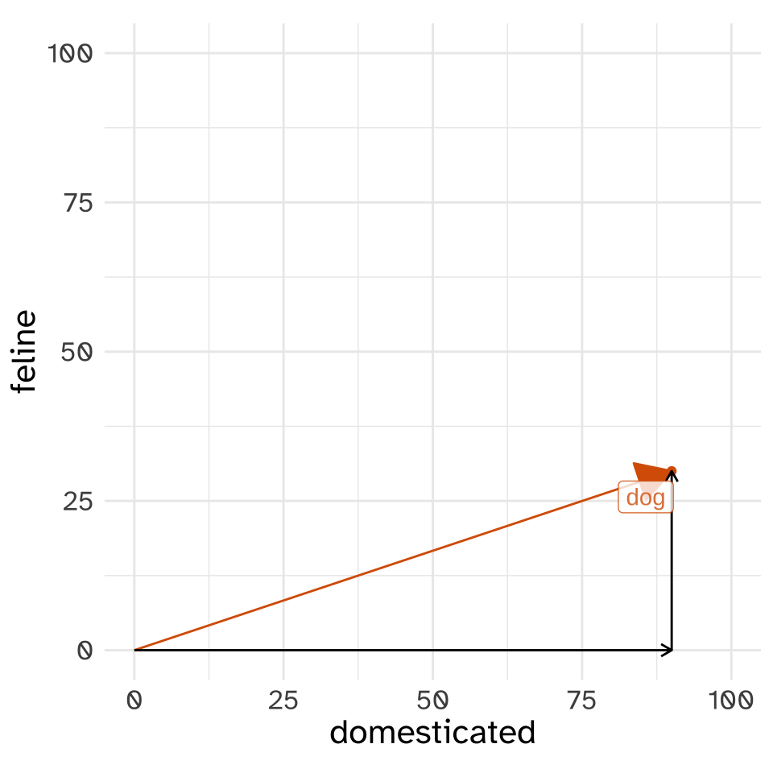
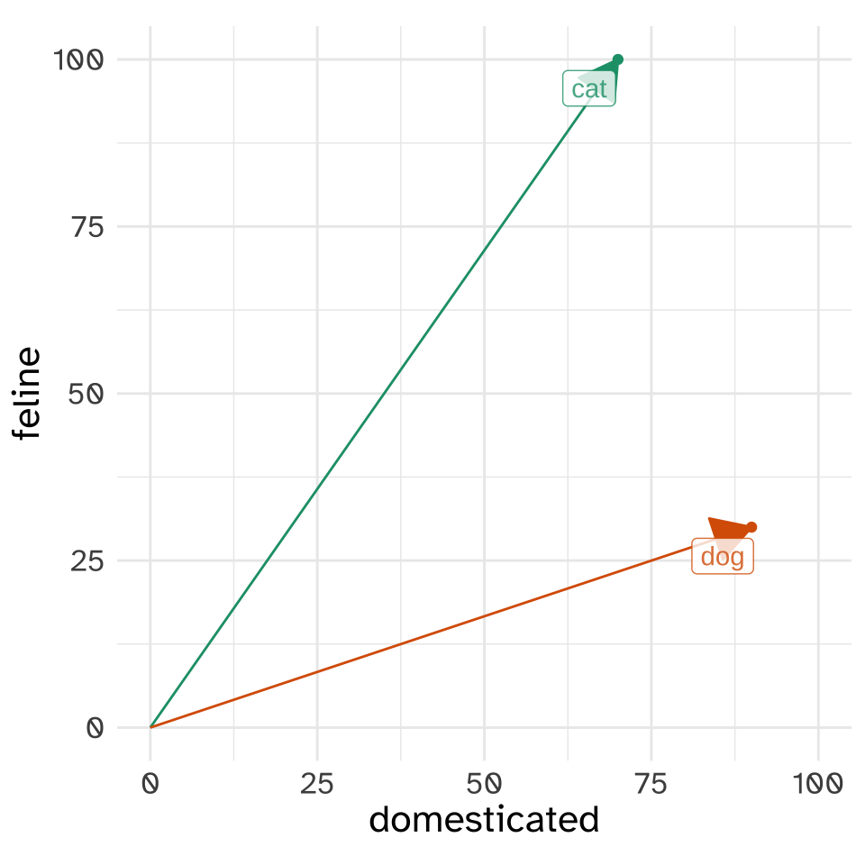
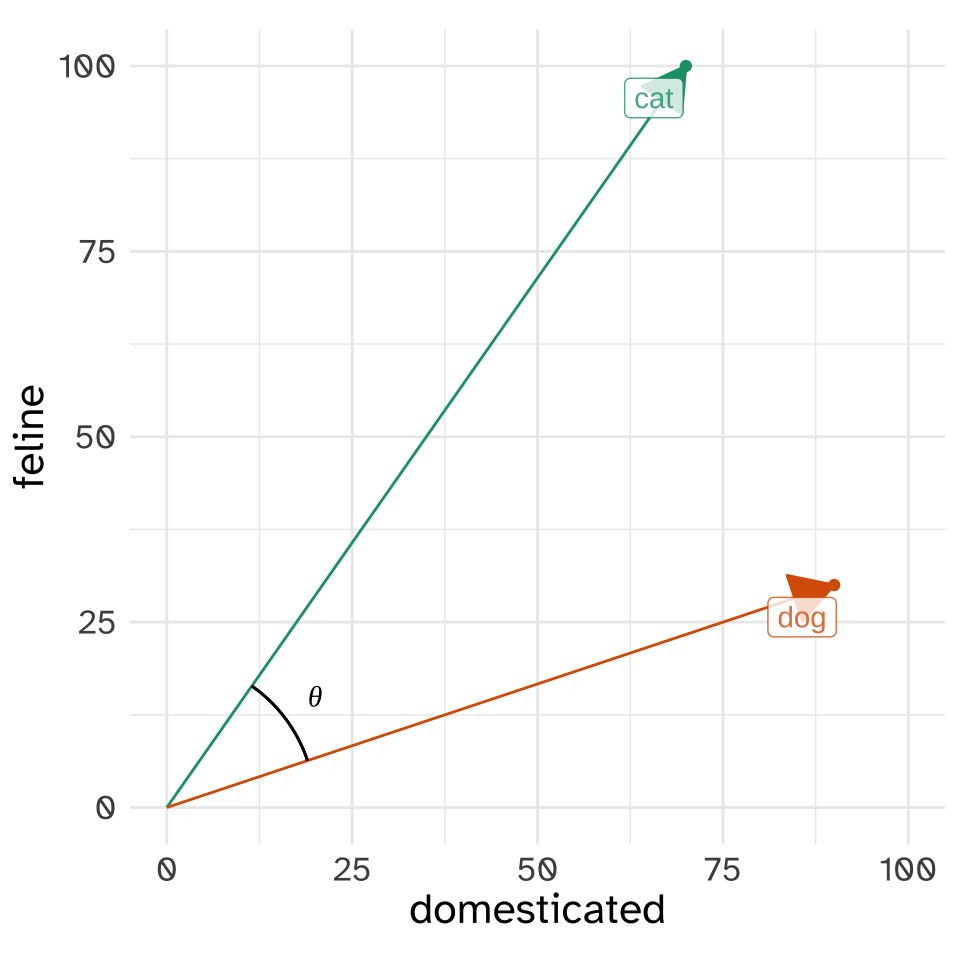
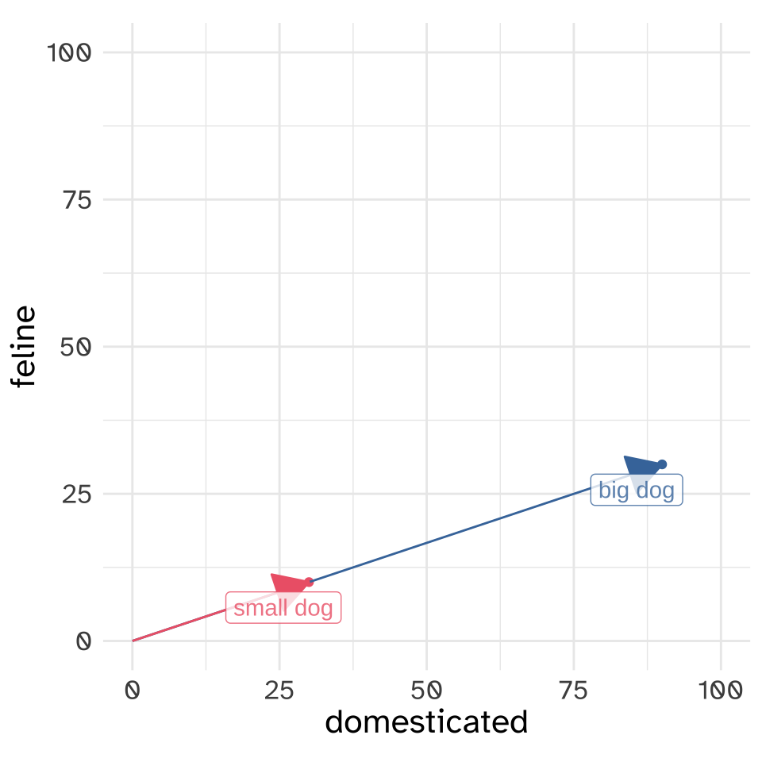
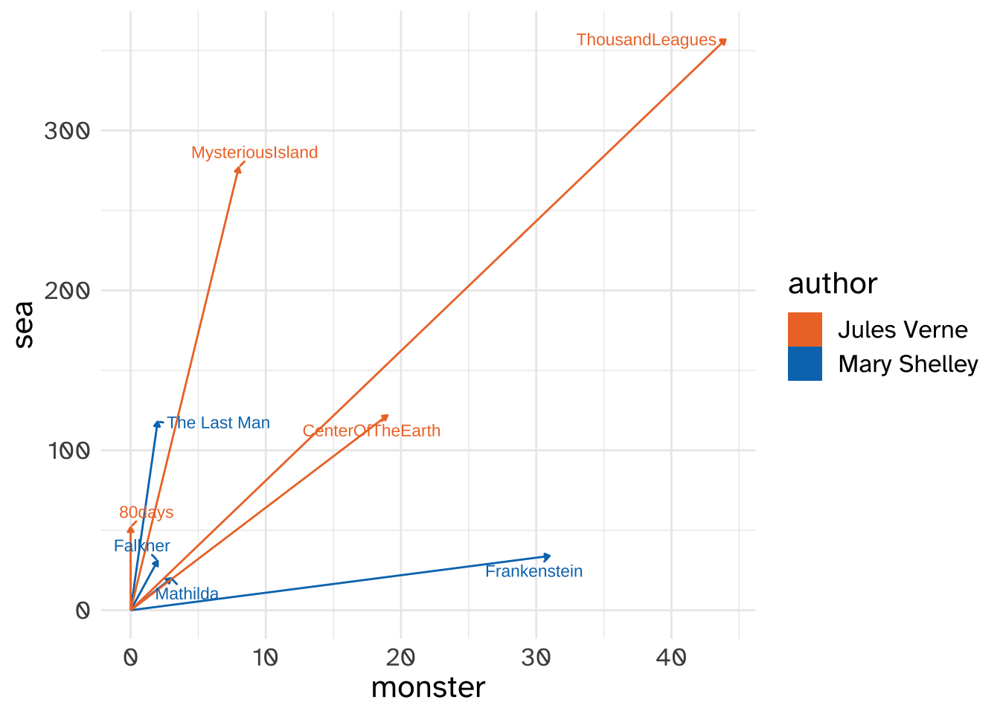

Word Vectors - Concepts
Features
Categorical Features
In linguistics, you’ve probably already encountered our tendency to categorize things using a bunch of features. For example, in Phonology we often categorize phonemes according to “distinctive features.”
| voice | continuant | LAB | COR | DORS | anterior | |
|---|---|---|---|---|---|---|
| p | ➖ | ➖ | ➕ | ➖ | ➖ | ➖ |
| t | ➖ | ➖ | ➖ | ➕ | ➖ | ➖ |
| k | ➖ | ➖ | ➖ | ➖ | ➕ | ➖ |
| b | ➕ | ➖ | ➕ | ➖ | ➖ | ➖ |
| d | ➕ | ➖ | ➖ | ➕ | ➖ | ➖ |
| g | ➕ | ➖ | ➖ | ➖ | ➕ | ➖ |
| f | ➖ | ➕ | ➕ | ➖ | ➖ | ➖ |
| s | ➖ | ➕ | ➖ | ➕ | ➖ | ➖ |
| ʃ | ➖ | ➕ | ➖ | ➕ | ➖ | ➕ |
More relevant to the topic of word vectors, we could do the same with semantic features and words
| domesticated | feline | |
|---|---|---|
| cat | ➕ | ➕ |
| puma | ➖ | ➕ |
| dog | ➕ | ➖ |
| wolf | ➖ | ➖ |
Numeric Features
Instead of using categorical values for these features, let’s use a numeric score. These represent my own subjective scores for these animals.
| domesticated | feline | |
|---|---|---|
| cat | 70 | 100 |
| puma | 0 | 90 |
| dog | 90 | 30 |
| wolf | 10 | 10 |
The sequence of numbers associated with “cat”, [70, 100], we’ll call a “vector”. A lot of the work we’re going to do with vectors can be understood if we start with two dimensional vectors like this. We can plot each animal as a point in the [domesticated, feline] “vector space”.

Vectors
The word “vector” might conjure up ideas of “direction” for you, as it should! The way we really want to think about vectors when we’re doing word vectors is like a line with an arrow at the end, pointing at the location in “vector space” where each animal is.

The “magnitude” of a vector.
We’re going to have to calculate the magnitudes of vectors, so let’s start with calculating the magnitude of the “dog” vector.

The magnitude of “dog” in this vector space is the length of the line that reaches from the [0,0] point to the location of “dog”. The mathematical notation we’d use to indicate “the length of the dog vector” is \(|\text{dog}|\). We can work out the distance of the vector by thinking about it like a right triangle.

Looking at the dog vector this way, we can use the Pythagorean Theorem to get its length
\[ |\text{dog}|^2 = \text{domesticated}^2 + \text{feline}^2 \]
\[ |\text{dog}| = \sqrt{\text{domesticated}^2 + \text{feline}^2} \]
I won’t go through the actual numbers here, but it turns out the magnitude of dog is 94.87.
import numpy as np
dog = np.array([90, 30])
dog_mag1 = np.sqrt(sum([x**2 for x in dog]))
#or
dog_mag2 = np.linalg.norm(dog)
print(f"{dog_mag1:.2f} or {dog_mag2:.2f}")94.87 or 94.87In General
The way things worked out for dog is how we’d calculate the magnitude of any vector of any dimensionality. You square each value, sum them up, then take the square root of that sum.
\[ |v|^2 = v_1^2 + v_2^2 + v_3^2 + \dots +v_i^2 \]
\[ |v|^2 = \sum_{i = 1}^nv_i^2 \]
\[ |v| = \sqrt{\sum_{i = 1}^nv_i^2} \]
Comparing Vectors
Now, let’s compare the vectors for “cat” and “dog” in this “vector space”

How should we compare the closeness of these two vectors in the vector space? What’s most common is to estimate the angle between the two, usually notated with \(\theta\), or more specifially, to get the cosine of the angle, \(\cos\theta\).

Where did cosine come in?? This is a bit of a throwback to trigonometry, again being related to formulas for estimating angles of triangles.
The specific formula to get \(\cos\theta\) for dog and cat involves a “dot product”, which for dog and cat in particular goes like this \[ \text{dog}\cdot \text{cat} = (\text{dog}_{\text{domesticated}}\times\text{cat}_{\text{domesticated}}) + (\text{dog}_{\text{feline}}\times\text{cat}_{\text{feline}}) \]
dog = np.array([90, 30])
cat = np.array([70, 100])
dot1 = sum([x * y for x,y in zip(dog, cat)])
# or!
dot2 = np.dot(dog, cat)
print(f"{dot1} or {dot2}")9300 or 9300In general, the dot product of any two vectors will be
\[ a\cdot b = a_1b_1 + a_2b_2 + a_3b_3 +\dots a_ib_i \]
\[ a\cdot b= \sum_{i=1}^n a_ib_i \]
One way to think of the dot product here is if two vectors have very similar values along many dimensions, their dot product will be large. On the other hand, if they’re very different, and one had a lot of zeros where the other has large values, the dot product will be small.
The full formula for \(\cos\theta\) normalizes the dot product by dividing it by the product the magnitude of dog and cat.
\[ \cos\theta = \frac{\text{dog}\cdot\text{cat}}{|\text{dog}||\text{cat}|} \]
The reason why we’re dividing like this is because if the two vectors had the same direction, their dot product would equal multiplying their magnitudes.

big_dog = np.array([90, 30])
small_dog = np.array([30, 10])
big_dog_mag = np.linalg.norm(big_dog)
small_dog_mag = np.linalg.norm(small_dog)
print(f"Product of magnitudes is {(big_dog_mag * small_dog_mag):.0f}")Product of magnitudes is 3000big_small_dot = np.dot(big_dog, small_dog)
print(f"Dot produtct of vectors is {big_small_dot}")Dot produtct of vectors is 3000Normalizing like this means that \(\cos\theta\) is always going to be some number between -1 and 1, and for the vectors we’re going to be looking at, usually between 0 and 1.
For the actual case of dog and cat
dog = np.array([90, 30])
cat = np.array([70, 100])
dog_dot_cat = np.dot(dog, cat)
dog_mag = np.linalg.norm(dog)
cat_mag = np.linalg.norm(cat)
cat_dog_cos = dog_dot_cat / (dog_mag * cat_mag)
print(f"The cosine similarity of dog and cat is {cat_dog_cos:.3f}")The cosine similarity of dog and cat is 0.803or
from scipy import spatial
cat_dog_cos2 = 1 - spatial.distance.cosine(dog, cat)
print(f"The cosine similarity of dog and cat is {cat_dog_cos2:.3f}")The cosine similarity of dog and cat is 0.803With more dimensions
The basic principles remain the same even if we start including even more dimensions. For example, let’s say we added size to the set of features for each animal.
| animal | domesticated | feline | size |
|---|---|---|---|
| cat | 70 | 100 | 10 |
| puma | 0 | 90 | 90 |
| dog | 90 | 30 | 30 |
| wolf | 10 | 10 | 60 |
We can do all the same things we did before, with the same math.
dog = np.array([90, 30, 30])
cat = np.array([70, 100, 10])
dog_mag = np.linalg.norm(dog)
cat_mag = np.linalg.norm(cat)
print(f"dog magnitude: {dog_mag:.2f}, cat magnitude: {cat_mag:.3f}")dog magnitude: 99.50, cat magnitude: 122.474dog_cat_cos = np.dot(dog, cat)/(dog_mag * cat_mag)
print(f"dog and cat cosine similarity: {dog_cat_cos:.2f}")dog and cat cosine similarity: 0.79What does this have to do with NLP?
Before we get to word, vectors, we can start talking about “document” vectors. I’ve collapsed the next few code blocks for downloading a bunch of books by Mary Shelley and Jules Verne so we can focus on the “vectors” part.
a get book function
import gutenbergpy.textget
def getbook(book, outfile):
"""
Download a book from project Gutenberg and save it
to the specified outfile
"""
print(f"Downloading Project Gutenberg ID {book}")
raw_book = gutenbergpy.textget.get_text_by_id(book)
clean_book = gutenbergpy.textget.strip_headers(raw_book)
if not outfile:
outfile = f'{book}.txt'
print(f"Saving book as {outfile}")
with open(outfile, 'wb') as file:
file.write(clean_book)
file.close()Project Gutenberg information
mary_shelley_ids = [84, 15238, 18247, 64329]
mary_shelley_files = [f"gen/books/shelley/{x}.txt" for x in mary_shelley_ids]
mary_shelley_titles = ["Frankenstein", "Mathilda", "The Last Man", "Falkner"]
jules_verne_ids = [103, 164, 1268, 18857]
jules_verne_files = [f"gen/books/verne/{x}.txt" for x in jules_verne_ids]
jules_verne_titles = ["80days", "ThousandLeagues", "MysteriousIsland", "CenterOfTheEarth"]foo = [getbook(x, f"gen/books/shelley/{x}.txt") for x in mary_shelley_ids]
foo = [getbook(x, f"gen/books/verne/{x}.txt") for x in jules_verne_ids]We’re going to very quickly tokenize these books into words, and then get just unigram counts for each book
from nltk.tokenize import RegexpTokenizer
from collections import Counterdef get_unigram_counts(path):
"""
Given a path, generate a counter dictionary of unigrams
"""
with open(path, 'r') as f:
text = f.read()
text = text.replace("\n", " ").lower()
unigrams = RegexpTokenizer(r"\w+").tokenize(text)
count = Counter(unigrams)
return(count)shelley_words = {k:get_unigram_counts(v)
for k, v in zip(mary_shelley_titles, mary_shelley_files)}
verne_words = {k:get_unigram_counts(v)
for k, v in zip(jules_verne_titles, jules_verne_files)}So now, shelley_words is a dictionary with keys for each book:
shelley_words.keys()dict_keys(['Frankenstein', 'Mathilda', 'The Last Man', 'Falkner'])And the value associated with each key is the unigram count of word in that book:
shelley_words["Frankenstein"].most_common(10)[('the', 4195), ('and', 2976), ('i', 2846), ('of', 2642), ('to', 2089), ('my', 1776), ('a', 1391), ('in', 1128), ('was', 1021), ('that', 1018)]Books in word count vector space
Before were were classifying animals in the “feline” and “domesticated” vector space. What if we classified These book by Mary Shelley and Jules Verne in the “monster” and “sea” vector space. We’ll just compare them in terms of how many times the word “monster” and “sea” appeared in each of their books.
def get_term_count(book_dict, term):
"""
return a list of the number of times a term has appeared
in a book
"""
out = [book_dict[book][term] for book in book_dict]
return(out)monster = ["monster"] + \
get_term_count(shelley_words, "monster") + \
get_term_count(verne_words, "monster")
sea = ["sea"] + \
get_term_count(shelley_words, "sea") + \
get_term_count(verne_words, "sea")
| book | monster | sea |
|---|---|---|
| Frankenstein | 31 | 34 |
| Mathilda | 3 | 20 |
| The Last Man | 2 | 118 |
| Falkner | 2 | 31 |
| 80days | 0 | 52 |
| ThousandLeagues | 44 | 357 |
| MysteriousIsland | 8 | 277 |
| CenterOfTheEarth | 19 | 122 |
So, in the “monster”, “sea” vector space, we’d say Frankenstein has a vector of [31, 31], and Around the World in 80 Days has a vector of [0, 52]. We can make a vector plot for these books in much the same way we did for the animals in the “feline” and “domesticated” vector space.

monster,sea vector spaceWe can also do all of the same vector computations we did before. In Figure 8, Frankenstein and Around the World in 80 Days seem to have the largest angle between them. Let’s calculate it!
frank = [shelley_words["Frankenstein"][word] for word in ["monster", "sea"]]
eighty = [verne_words["80days"][word] for word in ["monster", "sea"]]print(frank)[31, 34]print(eighty)[0, 52]Let’s get their cosine similarity the fast way with scipy.spatial.distance.cosine()
# scipy already imported
1 - spatial.distance.cosine(frank, eighty)0.7389558439133294The novels Mathilda and Journey to the Center of the Earth, on the other hand, look like they have almost identical angles.
mathilda = [shelley_words["Mathilda"][word] for word in ["monster", "sea"]]
center = [verne_words["CenterOfTheEarth"][word] for word in ["monster", "sea"]]print(mathilda)[3, 20]print(center)[19, 122]1 - spatial.distance.cosine(mathilda, center)0.9999842826707133Here’s table of every novel’s cosine similarity from the other in “monster”, “sea” vector space,
| Fankenstein | Mathilda | EightyDay | CenterOfTheEarth | |
|---|---|---|---|---|
| Fankenstein | 1 | 0.83 | 0.74 | 0.83 |
| Mathilda | 1 | 0.99 | 1 | |
| EightyDay | 1 | 0.99 | ||
| CenterOfTheEarth | 1 |
The full vector space
Of course, we are not limited to calculating cosine similarity on just two dimensions. We could use the whole shared vocabulary between two novels to compute the cosine similarity.
shared_vocab = set(list(shelley_words["Frankenstein"].keys()) +
list(verne_words["80days"].keys()))
print(f"Total dimensions: {len(shared_vocab)}")Total dimensions: 10544frankenstein_vector = [shelley_words["Frankenstein"][v] for v in shared_vocab]
eighty_vector = [verne_words["80days"][v] for v in shared_vocab]
1 - spatial.distance.cosine(frankenstein_vector, eighty_vector)0.8759771803390622